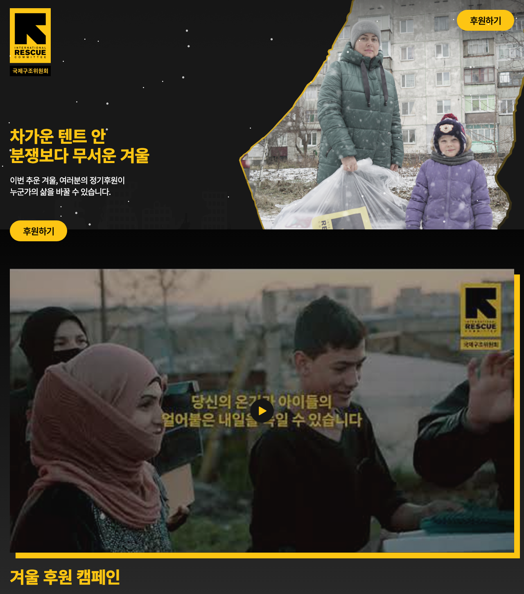
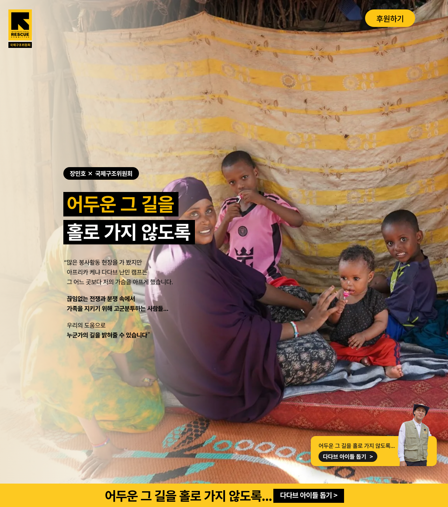
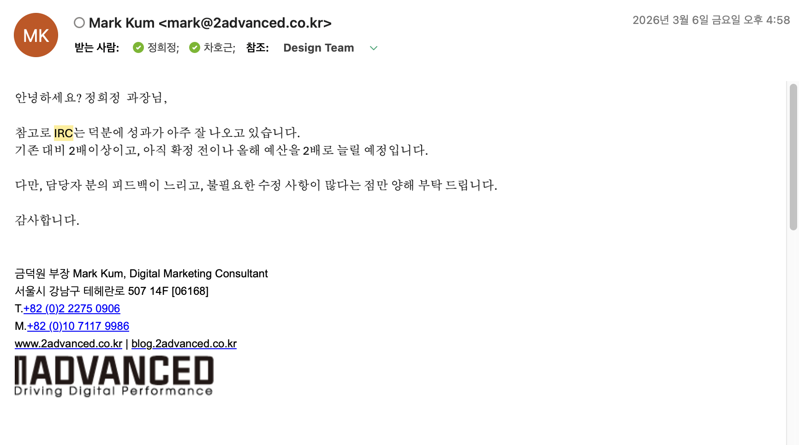
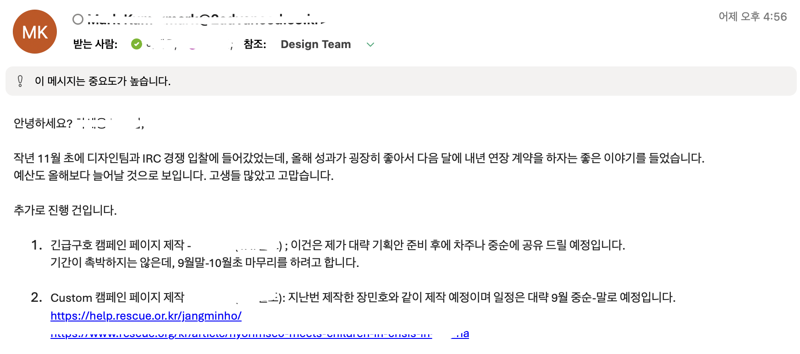

가자 겨울 캠페인
분쟁 지역의 겨울을 다룬 모금 캠페인입니다. 눈 내리는 연출과 고해상도 비주얼로 메시지 몰입도를 높이고, 모바일에서는 플로팅 후원 버튼으로 CTA가 항상 보이게 했습니다.
국제구조위원회의 모금 캠페인 랜딩 페이지를 두 건 퍼블리싱했습니다. 시안 재현도와 함께 후원 전환까지 끊기지 않는 화면 흐름에 중점을 뒀습니다.

분쟁 지역의 겨울을 다룬 모금 캠페인입니다. 눈 내리는 연출과 고해상도 비주얼로 메시지 몰입도를 높이고, 모바일에서는 플로팅 후원 버튼으로 CTA가 항상 보이게 했습니다.

가수 장민호와 협업한 난민캠프 지원 캠페인입니다. 영상 플레이어, FAQ 아코디언, 정기후원 옵션, 재정 투명성 인포그래픽까지 정보 요소가 많아 섹션 단위 구조 설계에 비중을 뒀습니다.
캠페인은 비주얼 완성도가 곧 메시지 전달력이라, 시안과 동일한 수준으로 화면 요소를 맞췄습니다.
눈 내리는 연출, 영상 플레이어, FAQ 아코디언을 접근성 상태값(aria-expanded)과 함께 구성했습니다.
1400 / 768 두 지점으로 분기하고, 모바일에서는 플로팅 버튼으로 후원 CTA를 계속 노출했습니다.
디바이스별 이미지 전환, 지연 로딩, CSS 최소화로 초기 로딩 부담을 줄였습니다.
제목을 누르면 열립니다. 기관명·도메인·내부 경로는 예시 값으로 바꿨습니다.
<section class="main_section">
<img
class="main_bg_img"
src="./images/main_bg02.png"
data-src-desktop="./images/main_bg02.png"
data-src-mobile="./images/main_bg_m.png"
alt="눈 내리는 날, 구호 물품을 받은 보호자와 아이가 서 있는 모습"
>
<div class="main_section_inner">
<h1 class="main_logo">
<a href="https://example.com/" aria-label="단체 홈">
<img src="./images/logo.png" alt="단체 로고">
</a>
</h1>
<div class="main_hero">
<h2 class="main_title"><span>차가운 텐트 안</span><br><span>분쟁보다 무서운 겨울</span></h2>
<h3 class="main_desc">이번 추운 겨울, 여러분의 정기후원이 누군가의 삶을 바꿀 수 있습니다.</h3>
<a class="main_btn btn_02 donateBtn" href="...">후원하기</a>
</div>
</div>
</section>/* main_section */
.main_section { ... }
.main_section .main_bg_img { ... }
.main_section .main_section_inner { ... }
.main_section .main_btn { ... }
.main_section .main_hero { ... }
@media (max-width: 1400px) {
.main_section { ... }
.main_section .main_section_inner { ... }
.main_section .main_btn { ... }
}
@media (max-width: 768px) {
.main_section .main_btn.btn_01,
.main_section .main_btn.btn_02 { display: none !important; }
.main_section .main_btn.btn_floating { display: flex; }
.main_section .main_hero .main_title { font-size: 28px; }
}
/* video_section */
.video_section { ... }
.video_section .video_section_inner { ... }
.video_section .video_card { ... }
.video_section .video_card_media.is-playing .video_iframe { display: block; }
/* about_section, about_section2, news_section, content_section ... */
.about_section { ... }
.about_section2 { ... }
.news_section { ... }
.content_section { ... }var D = 260;
var $faqRoot = $(".FAQ_section");
if ($faqRoot.length) {
$faqRoot.find(".faq_item.is_open").each(function () {
$(this).find(".faq_q").attr("aria-expanded", "true");
$(this).find(".faq_a").show();
});
$faqRoot.on("click", ".faq_q", function () {
var $item = $(this).closest(".faq_item");
var $a = $item.find(".faq_a");
var isOpen = $item.hasClass("is_open");
$faqRoot.find(".faq_item.is_open").not($item)
.removeClass("is_open")
.find(".faq_q").attr("aria-expanded", "false").end()
.find(".faq_a").stop(true, true).slideUp(D);
$item.toggleClass("is_open", !isOpen);
$(this).attr("aria-expanded", isOpen ? "false" : "true");
$a.stop(true, true)[isOpen ? "slideUp" : "slideDown"](D);
});
}const img = document.querySelector(".main_bg_img");
const desktop = img.dataset.srcDesktop || img.getAttribute("src");
const mobile = img.dataset.srcMobile;
const mql = window.matchMedia("(max-width: 768px)");
const apply = () => (img.src = mql.matches ? mobile : desktop);
apply();
mql.addEventListener ? mql.addEventListener("change", apply) : mql.addListener(apply);
const btn = document.querySelector("#donate_btn_mobile.btn_floating");
const sponsor = document.querySelector(".sponsor_section");
function updateFloatingBtn() {
if (!mql.matches) return btn.classList.remove("is-hidden");
const sponsorRect = sponsor.getBoundingClientRect();
const hideLine = window.innerHeight - ((btn.offsetHeight || 56) + 20);
btn.classList.toggle("is-hidden", sponsorRect.top <= hideLine);
}
window.addEventListener("scroll", () => requestAnimationFrame(updateFloatingBtn), { passive: true });
window.addEventListener("resize", () => requestAnimationFrame(updateFloatingBtn));겨울 캠페인 운영 이후 받은 회신입니다. 페이지 유입이 크게 늘어 기존 대비 성과가 2배 이상이며, 다음 캠페인 예산도 약 2배 수준으로 확대할 예정이라는 내용입니다.

이후 전달받은 내용입니다. 경쟁 입찰로 수주한 IRC 건의 올해 성과가 좋아 내년 연장 계약과 예산 증액이 논의되고 있으며, 긴급구호 캠페인과 Custom 캠페인 2건이 추가로 발주됐습니다. Custom 캠페인은 장민호 페이지를 기준 삼아 제작할 예정이라는 내용입니다.
